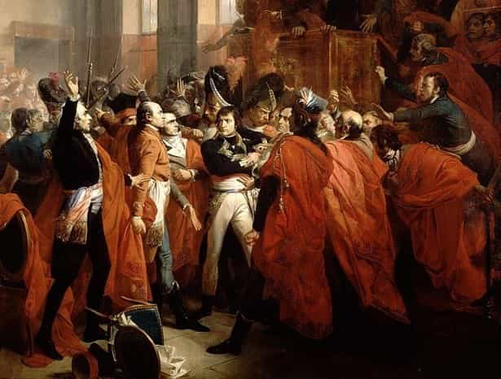

Libertas is a young bard traveling along the endless road to self-improvement and recounting his adventures. You can follow him on Twitter.


A great deal of people have often commented here asking: “Where does it stop?” In everything from the efforts to stigmatize normal flirting (while ignoring rape from “migrants”) to criminalizing the failure to celebrate transgenderism, so many people wonder where does it end. When will this insanity to finally run its course? The answer is…
Never.
Modern “progressives,” as the way they style themselves suggests, are obsessed with everything they see as being “new.” As Thomas Sowell said over 20 years ago, it’s vital to their self-image that they differentiate themselves from the rest of the public, which they view as being hopelessly backward and morally inferior to themselves. Yet, it’s actually in this instinct that they reveal themselves as not being “new” at all. The “social justice” peacock of today is nothing more than the latest version of an old zealot that stretches back to Ancient Egypt. This zealot is the revolutionary in the service of the “Year Zero” cause.
The term itself originates from Pol Pot. He borrowed it from the French, who in their revolution declared that the execution of Louis XVI was the event that began Year One on the new, revolutionary calendar. All events prior to that date were irrelevant, not worth preserving, and were to be erased from memory, along with everyone who defended them, or who were merely insufficiently enthusiastic for the new era.
The remains of dead royals were destroyed, the churches were closed and desecrated (which included throwing what was said to be the Crown of Thorns into the gutter), and any defenders of the old order (or simply those suspected of it or connected to it in passing) were sent to the guillotine.
The impetus of a Year Zero revolution is to raze the existing culture to the ground and build a new one from scratch. Any connection to the past, whether in the form of art, law, or people, needs to be erased. Pol Pot was perhaps the most extreme in this. Seemingly anyone at any time was prone to being killed. Even those who wore glasses were in danger of being seen as intellectuals and thus an obstacle to the implementation of Pol Pot’s agrarian socialist paradise. Pol Pot and the Khmer Rouge killed more people in their country per capita than anyone else.
A Year Zero regime is the fullest measure of totalitarianism. Not even language itself is immune. The use of Orwellian terms has often been mocked here at Return Of Kings, but the art form goes way back. The pioneer of Newspeak was the Pharaoh Akhenaten, who sought to overthrow the ancient religious order in Egypt and replace the familiar gods with his one god, the Aten. Akhenaten closed down the temples and prohibited the worship of the old gods, but this was only the start. Akhenaten of course erased the names of the old gods, but he even went so far as to cross out the plural “gods” on inscriptions all over Egypt. Prominent people would change their own names, usually to reflect solar deities (say, from something like “Wenamon” to “Wenare”) to either incur his favor or avoid his displeasure.
Not even the age-old beliefs in the afterlife were immune from the revolution, as the famous death prayers were no longer addressed to lord of the dead, Osiris, but to Akhenaten. A depiction has even been found of the Aten defeating the gods of the underworld. This would have been a stunning and dismaying piece of propaganda for an ancient Egyptian, who would have always been concerned about his eternal life. This was a culture that, more than any other, created entire industries to ensure that people would be able to have a comfortable afterlife.
It’s often been said that Communist propaganda was designed to be as demoralizing as possible. The architecture in Soviet-occupied Europe, for example, was stunningly ugly. This is certainly a tendency that’s been carried over into our own time, from the celebration of vulgar art, to the celebration of fatness, to the mandated use of “proper pronouns.” Yet, as we’ve seen, none of this is new. It’s an age-old technique to enforce submission to the revolution through compulsory amnesia. Nothing about the past can be looked on fondly or even spoken of at all.
And it’s certainly no coincidence that both ISIS and the “social justice” peacocks have a penchant for toppling statues. Both are driven by the same instinct in service of whatever their conception of utopia is.
Unfortunately for the Year Zero zealots, things never go the way they expect. They’re usually too busy accusing each other of anti-revolutionary sentiment in a bid for power, or focusing on nonsense. Prioritizing the personal behavior of the population and the imposition of a manufactured (and therefore ugly) culture makes for bad government.
People can only pay attention to one thing at a time, and failure to control your attention will lead you to make the wrong decisions in life. Akhenaten focused so greatly on his revolution that the Hittites sponsored the conquest of Egypt’s Asiatic vassals under his watch. The French Directorate was too busy replacing the calendar and accusing each other that they neglected to manage the wars that country got into as a result of the Revolution.
Into this vacuum of chaos usually steps some kind of strongman to lead the reaction against the revolutionaries and restore order. After the chaos of Akhenaten’s regime, a general named Horemheb eventually took control of the country, putting down the domestic disorder the revolution caused and restoring order, which included an ironic turn of the tables – he began the erasure of Akhenaten, his heirs, and his regime from memory.
This example would repeat throughout the centuries. Into the disorder after Oliver Cromwell died stepped General George Monck and a restored monarchy in Charles II, who purged Cromwell’s cronies and destroyed radical factions like the Fifth Monarchists. Theaters were reopened and other excesses of Cromwell’s regime reversed. The populace was overjoyed.
140 years later, Napoleon would lead an armed coup, overthrow the Directory, and end the reign of the Year Zero revolutionaries in France. Though he was no conservative by the standards of his time, Napoleon would go on to restore law and order, the church, the calendar, and other institutions the revolutionaries had sought to overthrow, becoming immensely popular.

These are only a few examples. Because the Year Zero revolutionaries bring such chaos and disorder, they demoralize and anger the population, and because they’re extremely violent, little options remain for the disaffected population but to rally to the support of these strongmen. They restore the old order, but certain liberties are often lost in the process. As leftists in our own culture grow more violent and brazen, we would be well served by remembering this pattern.
If the “social justice” peacocks think Donald Trump is some kind of strongman, they might surprise themselves at what comes next, should they continue to act so insufferably – and all evidence says they will.
Read Next: An Introduction To The French Revolution